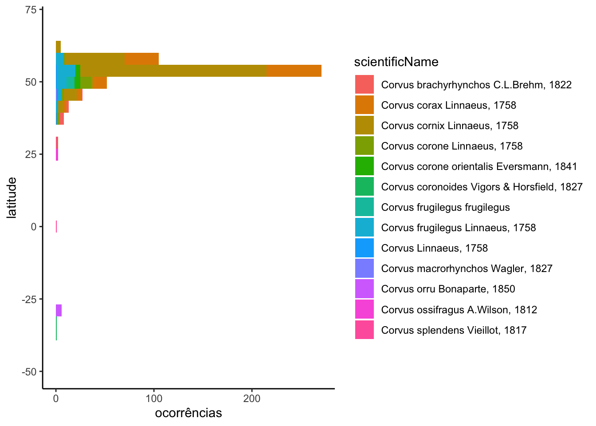

5.1 Website no GitHub
O Github Pages permite que você construa websites simples a partir de seu repositório Github. Para ativar esse recurso, acesse a guia Settings em https://github.com/SEU_USUÁRIO/ciencia_colab. Em seguida, clique no menu Pages na barra de navegação do lado esquerdo.
No botão abaixo de Source, escolha o Branch main e folder /(root):

Click Save. You should now see that the site is “ready to be published”:
Olhando no menu principal do repositório, você poderá confirmar que o repositório está ativo na forma de website

E também poderá acessar a página no endereço:
https://SEU_USUÁRIO.github.io/ciencia_colab
Repare que o URL é apenas uma reordenação do endereço do repositório no Github:
https://github.com/SEU_USUÁRIO/ciencia_colab
Para ficar mais fácil de encontrarem o website, clique na ícone de engrenagem em frente a palavra About no menu do lado direito e uma janela irá abrir:

O endereço do website irá aparecer em cinza, mas você terá que digitar ou copiar e colar o endereço neste campo. Basta salvar e já poderá ver o endereço na página principal do repositório.
Ao final, você deve ver algo como isso:

5.2 Ferramentas do Git/GitHub
O padrão das páginas principais de websites é ter uma página inicial nomeada como index.html. Portanto, teremos que renomear o nosso documento R Markdown. Para podermos alterar as rotinas e arquivos tendo a possibilidade de testar várias alternativas sem perder nosso trabalho anterior, vamos usar o comando branch para criar uma cópia do repositório onde poderão ser feitas alterações sem prejudicar o código original.
Nesta próxima etapa, vamos continuar a testar novas ferramentas do GitHub e usar comandos para testar novos caminhos sem alterar o repositório principal (branch e merge).
PS: este tutorial de Git e GitHub foi adaptado do material criado pelos colegas Thiago Silveira e Ben Best.
5.2.1 Controle de versão - experimentação: branch e merge
Os comandos branch e merge são muito úteis quando queremos testar diferentes caminhos. Imagine que você quer fazer uma figura e segue uma linha de raciocínio. Depois de se deparar com o resultado final, você percebe que poderia seguir um caminho diferente. Para não perder a primeira versão, que está no ramo master, você pode criar um branch, uma diferente abordagem em paralelo. Abaixo um resumo que que será realizado nesta seção:
| Comando | Ação |
|---|---|
branch |
Cria um novo “ramo” em seu repositório |
merge |
Incorporar um ramo criado ao ramo “master” |
O comando git no terminal é git branch. No RStudio você pode criar um novo branch clicando botão como indicado abaixo.

Depois de criar o novo branch nomeado Caminho_2, foram realizadas algumas mudanças na rotina, fazendo um commit e push neste ramo. Depois disso, será feito um merge incorporando as modificações ao ramo principal master. No RStudio é possível somente criar os ramos pela aba Git, para fazer o merge você terá que usar linha de comando no Terminal. Note que na interface de commit, temos sempre que preencher o campo commit message. Abaixo, em verde, são destacadas as mudanças realizadas, vermelho a versão anterior.

Para fazer o merge do ramo Caminho_2, primeiro você precisa voltar para o ramo master. Na aba git do RStudio troque de Caminho_2 para master. Depois disso digite os seguintes comandos no Terminal, um de cada vez.
# Fazendo o "merge" de "Caminho_2" ao "master"
git merge Caminho_2
# Fazendo o "push" para o repositório
git pushVocê verá na aba Terminal algo semelhante a figura abaixo.

Voltando para o repositório no Github podemos visualizar a versão atualizada, mais upstream do repositório no ramo master.

5.3 Ferramentas extra
5.3.1 Gráficos dinâmicos
5.3.1.1 Leaflet
O pacote leaflet permite adicionar mapas interativos nos documentos em html, permitindo que o usuário possa investigar com maior detalhe os detalhes plotados no mapa. Abaixo, vamos criar um mapa utilizando os dados de ocorrência do gênero Corvus (apenas para mudar do ambiente marinho um pouco). As etapas de aquisição e filtragem dos dados são as mesmas da atividade 3, então não serão detalhadas novamente.
library(tidyverse)
library(rgbif)
# ocorrencias
corvus_gbif <- occ_data(scientificName = "Corvus",
hasCoordinate = TRUE,
hasGeospatialIssue = FALSE)
# checar issues
issues_gbif <- corvus_gbif$data$issues %>%
unique() %>%
strsplit(., "[,]") %>%
unlist()
gbif_issues() %>%
data.frame() %>%
filter(code %in% issues_gbif)## code issue
## 1 cdround COORDINATE_ROUNDED
## 2 gass84 GEODETIC_DATUM_ASSUMED_WGS84
## 3 fpwktinv FOOTPRINT_WKT_INVALID
## description
## 1 Original coordinate modified by rounding to 5 decimals.
## 2 Indicating that the interpreted coordinates assume they are based on WGS84 datum as the datum was either not indicated or interpretable.
## 3 The Footprint Well-Known-Text given could not be interpreted
## type
## 1 occurrence
## 2 occurrence
## 3 occurrence# selecionar variaveis
corvus <- corvus_gbif$data %>%
dplyr::select(scientificName, decimalLatitude, decimalLongitude) %>%
distinct()Depois de carregar os dados, basta criar um mapa seguindo a sintaxe abaixo. Nela, indicamos um data.frame com dados de coordenadas geográficas em graus decimais. A função addTiles é responsável por indicar o tipo de mapa base utilizado. Aqui vamos utilizar o fundo padrão, mas para mais opções acesse este tutorial. Vamos plotar o mapa e dar uma conferida nas ocorrências.
library(leaflet)
# conferir no mapa
corvus %>%
leaflet() %>%
addTiles() %>%
addMarkers(~decimalLongitude,
~decimalLatitude)Podemos também dar uma incrementada mudando o tipo de marcador e incluir diferenças de acordo com os níveis de um fator, neste caso datasetName. Também é importante adicionar uma legenda ao mapa para indicar o significado das cores dos marcadores. Novamente, acesse o tutorial indicado para aprender como explorar ainda mais os recursos desta ferramenta.
br>
pal <- colorFactor(palette = "viridis", domain = unique(corvus$scientificName))
corvus %>%
leaflet() %>%
addTiles() %>%
addCircleMarkers(~decimalLongitude,
~decimalLatitude,
radius = 5,
label = ~as.character(scientificName),
color = ~pal(corvus$scientificName),
stroke = FALSE, fillOpacity = 0.5) %>%
addLegend('bottomright',
colors = unique(pal(corvus$scientificName)),
labels = unique(corvus$scientificName),
title = 'Espécie',
opacity = 0.5)5.3.1.2 Plotly
A biblioteca Plotly cria gráficos interativos customizáveis dos mais diversos tipos: gráficos de linha, gráficos de dispersão, gráficos de área, gráficos de barras, boxplot, histogramas, heatmaps, gráficos 3D (baseados em WebGL) e até gráficos animados.
A seguir, vamos utilizar um exemplo simples utilizando os mesmos dados dos corvos. Em princípio, vamos plotar os dados de ocorrência e relação à latitude, uma vez que a maioria deles está concentrada no hemisfério norte.
corvus %>%
mutate(lat = round(decimalLatitude)) %>%
group_by(lat, scientificName) %>%
summarise(occ = length(scientificName)) %>%
ggplot(aes(y = occ, x = lat, color = scientificName)) +
geom_point() +
geom_smooth() +
theme_classic() +
labs(x = "latitude", y = 'ocorrências')
Acima observamos que existe apenas uma ocorrência (Corvus coronoides) no hemisfério sul (latitude < 0) e isso dificulta a visualização do restante dos dados. Podemos limitar a escala do eixo para focar na área de maior concentração de dados.
corvus %>%
mutate(lat = round(decimalLatitude)) %>%
group_by(lat, scientificName) %>%
summarise(occ = length(scientificName)) %>%
ggplot(aes(y = occ, x = lat, color = scientificName)) +
geom_point() +
geom_smooth() +
theme_classic() +
labs(x = "latitude", y = 'ocorrências') +
xlim(40, 75)
Uma das vantagens do Plotly é permitir interagir com os gráficos e isso inclui selecionar alguns dados, verificar valores passando a cursor do mouse sobre os elementos gráficos e dar zoom em partes do gráfico. Veja o exemplo abaixo. Nele é possível ter uma ideia de todos os valores e investigar os valores na região com maior concentração de dados.
library(plotly)
cc <- corvus %>%
mutate(lat = round(decimalLatitude)) %>%
group_by(lat, scientificName) %>%
summarise(occ = length(scientificName)) %>%
ggplot(aes(y = occ, x = lat, color = scientificName)) +
geom_point() +
geom_smooth() +
theme_classic() +
labs(x = "latitude", y = 'ocorrências')
ggplotly(cc)Este foi apenas um exemplo, para mais funções, acesse o tutorial do Plotly.
Colabore, compartilhe, e cite as fontes!